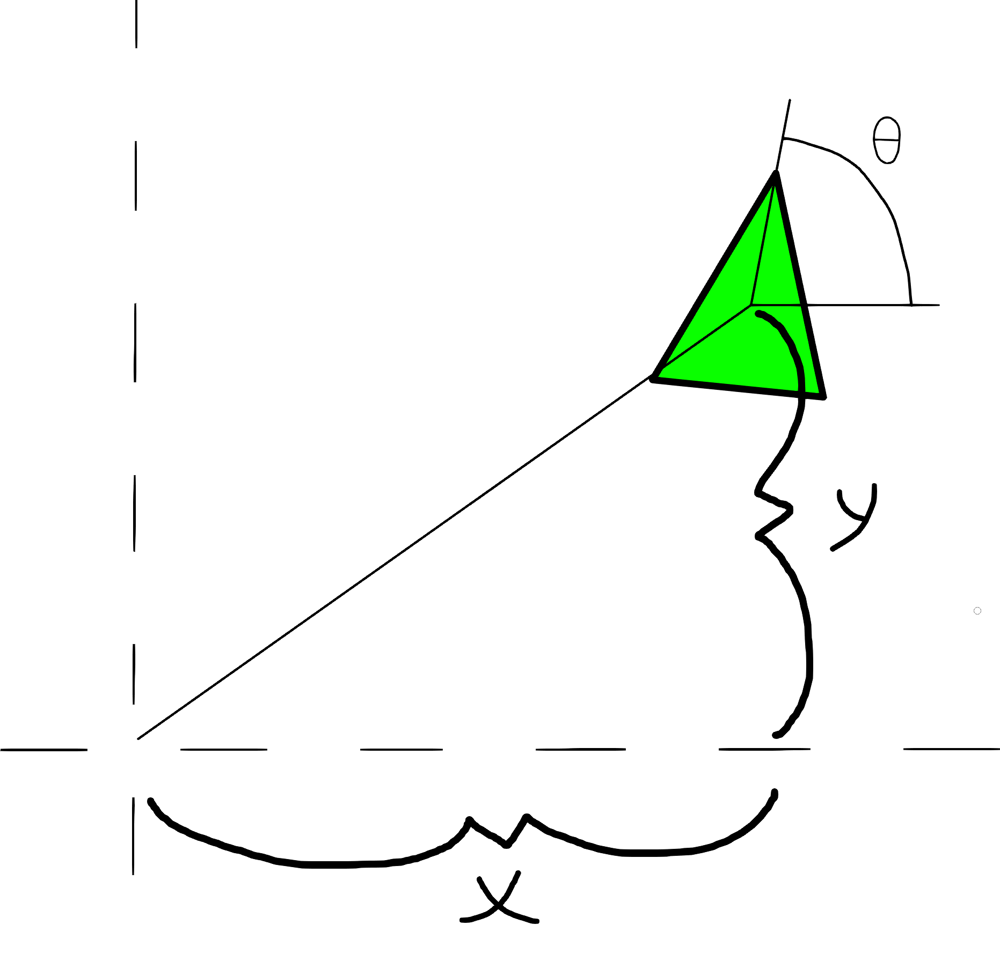

Boids Made Easy
Logan Seeley
Version 1.0.0, 2024-07-03
Copyright 2024 Logan Seeley. All rights reserved.
1.0 Overview
Programming can be difficult sometimes, and there isn't always an online tutorial to help. That's why I've decided to start creating pages explaining my most recent projects, and how to go about making your own version as well. This page will try to provide insight on how to program Boids.
Boids is an artificial life simulation. When done right, artificial birds should fly around in a mesmerizing dance. The simulation is very simple. It only containing 3 rules: alignment, cohesion and separation.
Every concept in this page can be implemented fairly easily in many different ways, that's why all code-snippets will be in C-like pseudocode. It will be your job to interpret my code and implement it yourself. No copy pasting! I will try my best to make it seem as easy as possible, but you're always allowed to optimize and improve.
Prerequisite knowledge includes:
The beginning chapters won't focus on optimizations. All that will be talked about later in the more advanced chapters. The focus at the beginning will be to simply get a Boids simulation running. Then after we've established something simple we can begin to dive into more optimized methods.
2.0 How I Did It
For my end-of-year project in robotics class, I had programmed a Boids simulation. I did it using Processing 3.5.4. Though I was proud of it, there were a few tiny bugs that bothered me. At the time, I didn't know how to fix them.
Recently, I decided to reprogram my Boids simulation with the intent to fix all those pesky bugs. However, this time, I wanted to challenge myself. That's why I decided to program everything with OpenGL, in C. I chose C over C++ because I find the experience more enjoyable. You can view my project on this page's GitHub Repository.
This is my first proper OpenGL and C program, so don't expect anything too fancy.
For my OpenGL implementation, I used the Glad and GLFW libraries. For all my vector math I used CGLM, a really simple-to-use and optimized library.
Getting Started
By now you should have chosen what enviornment you'll be using. Hopefully it already comes with a vector library. But if it doesn't then you should install one before continuing.
The Boid Structure
Every Boid can be simply described as a point moving in a direction. Each Boid moves at a constant speed in the direction they are looking. To clarify: a Boid's direction is not a vector, but rather a rotation.
Let's make a structure defining a Boid. Since we're only making 2-dimensional Boid, the position should be a 2D vector. Now, we could use degrees to represent the Boid's rotation, but that limits us in a big way: we won't be able to use trigonometric functions (because most languages don't support degrees). Trig functions use radians. Radians have a range of 0-2π, contrast to degrees which have a range of 0-360.
struct Boid
{
vec2 position;
float rotation;
}